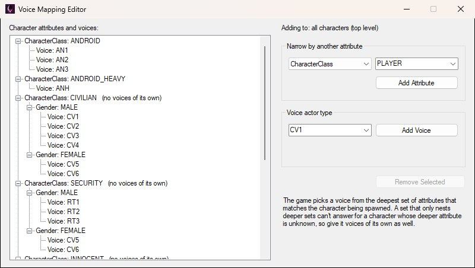
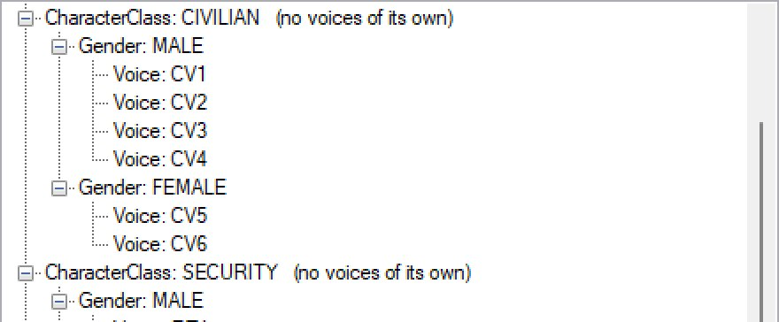
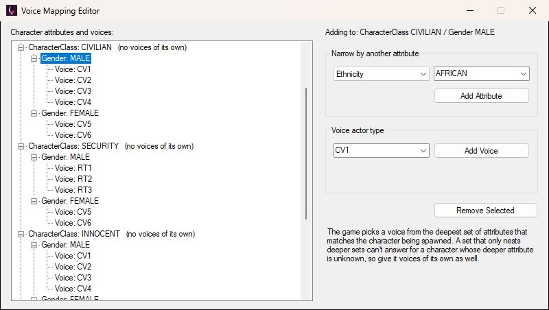
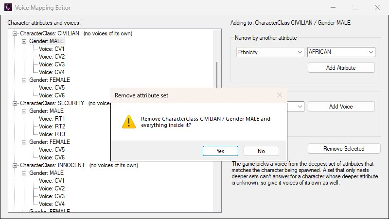

To edit voice mappings in OpenCAGE navigate to View > Configuration Editors > Characters > Voice Mappings, which opens the Voice Mapping Editor shown below. There's no Save button: every addition and removal is written back to the file as you make it.

The Voice Mapping Editor as it opens on the stock file: the whole tree on the left, and on the right what you're adding to — with nothing selected, all characters at the top level.
Voice mappings decide which voice actor type a spawned character is spoken by, based on the character's attributes. They live in CHR_INFO/CUSTOMCHARACTERVOICETYPEMAPPINGS.BIN — plain XML despite the name, with a readme at the top of the file describing the format. Comments in the file are kept as they were.
The mappings are a tree of character attributes — CharacterClass, Gender, Ethnicity and Build — nested in any order, with the permitted voice types listed at each level. When a character spawns, the game walks down the tree matching the character's attributes and takes the voices from the deepest set that matches, picking at random between every type listed there.
So a set only needs voices at the depth it cares about. The catch is a nested set that lists no voices of its own and only nests deeper sets: it can't answer for a character whose deeper attribute doesn't match anything below it. The editor flags those with (no voices of its own) after the set's name, as in the tree below, so you can give them a fallback. You'll see it on most of the stock sets — CIVILIAN, SECURITY, INNOCENT and MELEE_HUMAN keep all their voices under MALE and FEMALE sets; only ANDROID and ANDROID_HEAVY list theirs directly — so it isn't an error in an untouched file, just a set that can't answer for a character whose gender matches neither.

CIVILIAN lists no voices itself — only its MALE and FEMALE sets do — so the editor marks it, and SECURITY below it the same.
The Character attributes and voices tree shows the whole file. Select a set and the Adding to line at the top of the panel on the right names the set your next addition lands in, as shown below — selecting a voice counts as selecting the set it belongs to, and with nothing selected you're adding at the top level, for all characters.

With CIVILIAN / MALE selected and Ethnicity picked to narrow by, the Adding to line names the set your next Add lands in, and Remove Selected becomes available.
Under the Adding to line are the three things you can do:
CV1–CV4 for male and CV5–CV6 for female civilians, RT1–RT3 for male security, AN1–AN3 for androids and ANH for the heavy android) plus any already used in the file, and you can type a new one. A set can't list the same type twice. The game picks at random between every type listed in the set it settles on.
Removing a set with anything nested under it asks first; a single voice, or an empty set, goes straight away.